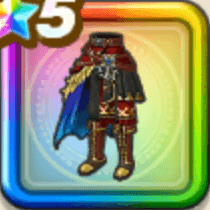

伝説の海賊のコート下
攻略班 9.5点 / 麻痺耐性+5%攻撃減耐性+5%麻痺耐性+5%攻撃減耐性+10%スキルの斬撃ダメージ+9%ザバ属性斬撃・体技ダメージ+5%バギ属性斬撃・体技ダメージ+6%
くわしい特徴
【レベル別習得スキル】 Lv1麻痺耐性+5% Lv5攻撃減耐性+5% Lv8スキルの斬撃ダメージ+9% Lv10【晴れ】戦闘終了時にMPを3回復する Lv12ザバ属性斬撃・体技ダメージ+5% Lv15バギ属性斬撃・体技ダメージ+6% Lv18麻痺耐性+5% Lv20すばやさ+6 Lv23攻撃減耐性+10% Lv25戦闘終了時にMPを3回復する 【限界突破スキル】 1凸攻撃力+12 2凸すばやさ+12 3凸守備力+12 4凸さいだいHP+12